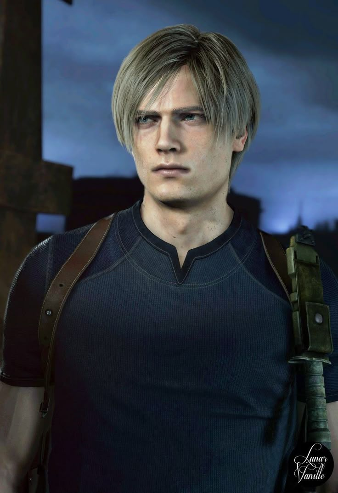

MISSION: ACTIVE
Resident Evil 4
Agent Leon S. Kennedy
Special Agent | Survivor | Asset Retrieval
Leon Scott Kennedy , lebih dikenal sebagai Leon S. Kennedy adalah seorang Italia-Amerika yang saat ini bekerja sebagai agen federal oleh Divisi Operasi Keamanan (DSO), sebuah badan antiterorisme di bawah komando langsung Presiden . Kennedy adalah seorang penyintas Insiden Penghancuran Raccoon City 1998 yang diketahui, saat itu seorang polisi. Setelah melarikan diri, ia direkrut secara paksa ke dalam tim anti- Umbrella rahasia di bawah USSTRATCOM yang dikhususkan untuk pertempuran anti- BOW , bertugas hingga 2011 dalam operasi berulang di seluruh dunia.
